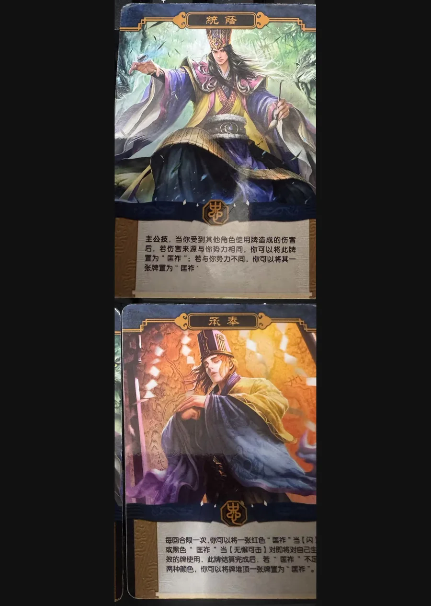

点击卡面查看大图
魏
界荀彧·匡祚
— 技能卡战场绝版
统荫主公技衍生
主公技，当你受到其他角色使用牌造成的伤害后，若伤害来源与你势力相同，你可以将此牌置为“匡祚”；若与你势力不同，你可以将其一张牌置为“匡祚”。
承奉衍生
每回合限一次，你可以将一张红色“匡祚”当【闪】或黑色“匡祚”当【无懈可击】对即将对自己生效的牌使用，此牌结算完成后，若“匡祚”不足两种颜色，你可以将牌堆顶一张牌置为“匡祚”。

点击卡面查看大图
战场绝版
主公技，当你受到其他角色使用牌造成的伤害后，若伤害来源与你势力相同，你可以将此牌置为“匡祚”；若与你势力不同，你可以将其一张牌置为“匡祚”。
每回合限一次，你可以将一张红色“匡祚”当【闪】或黑色“匡祚”当【无懈可击】对即将对自己生效的牌使用，此牌结算完成后，若“匡祚”不足两种颜色，你可以将牌堆顶一张牌置为“匡祚”。